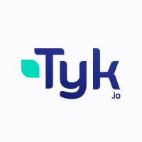
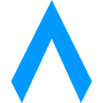
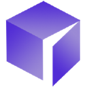
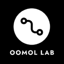

Best tools for agent identity and logins (2026)
Identity, auth and credential tools that let agents sign in to apps, prove who they act for and use secrets without ever seeing the raw passwords or keys. We list 18 tools for agent identity and logins below, each with a link-checked page, pricing as the maker states it and alternatives.
Updated
18 tools: 10 open source, 2 source-available, 2 free or freemium, 2 paid, usage-based or enterprise, 2 pricing on the maker's site.
Kong Gateway
Cloud-native API, LLM and MCP gateway that adds routing, auth, multi-LLM support, semantic security and MCP traffic analytics through plugins.
Added
Nango
Integration platform that connects products and AI agents to 1,000+ APIs with managed auth, syncs and tool calls.
Added

Tyk Gateway
Cloud-native API and AI gateway supporting REST, GraphQL, gRPC and MCP, with rate limiting, auth and analytics.
Added
Sphere SDK
TypeScript SDK that gives autonomous agents an identity and wallet on the Unicity network to find, negotiate and settle payments with other agents.
Added
Jarvis Registry
Open-source MCP and A2A agent gateway that connects copilots and agents to enterprise tools with identity, access control and observability.
Added

Metorial
Open-source identity and access layer that connects AI agents to 1,200+ integrations via MCP, CLI or API with auth, permissions and observability.
Added
ToolHive
Stacklok platform that runs MCP servers in isolated containers with per-request identity, access policy and observability.
Added
JumpCloud MCP
JumpCloud's MCP server that lets LLMs manage JumpCloud identity, device and access resources.
Added

Casdoor
Agent-first identity and access management with an MCP and agent gateway.
Added
Bindu
Identity, communication and payments layer that lets AI agents talk to and pay each other.
Added
Agent Governance Toolkit
Microsoft toolkit for policy enforcement, identity and sandboxing for AI agents.
Added

Open Connector
Open-source auth gateway connecting SaaS apps to AI agents via SDK, CLI and MCP.
Added
OneCLI
Sandboxed agent harness for teams with secure credential handling.
Added
Composio
Tool integrations and auth for agents across hundreds of apps.
Added
Proof x401
Open HTTP protocol and MCP server that let a website ask an AI agent to prove who it is acting for and have the person cryptographically sign the exact transaction terms, using Proof's agent identity wallet.
Added
Scalebrowser
Gives each agent its own isolated browser with a persistent identity for staying signed in.
Added
Self Agent Vault
Payment and login layer for AI agents: agents check out and sign in using mock tokens, while real card numbers and passwords are swapped in out of the agent's view, with spending caps, merchant allowlists and a kill switch.
Added
Skyfire
Gives AI agents verified identity and payment credentials so they can access and pay for services across the web.
Added
GitHub repos (12)
| Repo | GitHub stars | Licence | Last push |
|---|---|---|---|
| Kong Gateway ↗ | 44,278 | Apache License 2.0 | 2026-10-14 |
| Casdoor ↗ | 14,592 | Apache License 2.0 | 2026-10-17 |
| Nango ↗ | 12,807 | — | — |
| Tyk Gateway ↗ | 10,863 | — | 2026-10-15 |
| Bindu ↗ | 10,056 | Apache-2.0 | 2026-09-06 |
| Agent Governance Toolkit ↗ | 6,435 | MIT | 2026-10-18 |
| Open Connector ↗ | 6,031 | Apache License 2.0 | 2026-10-18 |
| Sphere SDK ↗ | 5,385 | — | 2026-10-17 |
| Jarvis Registry ↗ | 3,648 | — | 2026-10-16 |
| OneCLI ↗ | 3,576 | Apache License 2.0 | 2026-10-14 |
| Metorial ↗ | 3,367 | — | 2026-10-16 |
| ToolHive ↗ | 2,293 | — | 2026-10-16 |
12 repos. Stars and licence come from each repo, checked when the listing was last verified.
Browse these categories
Related tasks
Popular with: Security engineers · MCP developers
Tools are matched to tasks by category, use cases and what each tool says it does. Missing one? Submit it free.